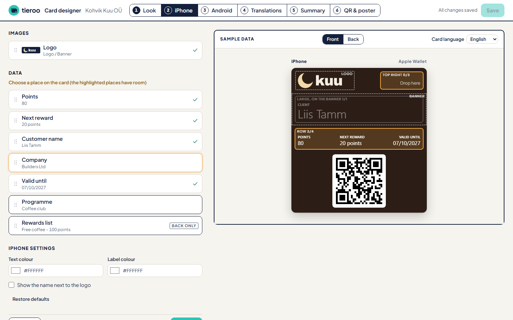

Your Odoo Loyalty cards on your customers' phones, updated after every purchase. Design the card in Odoo, send it by email or with a QR poster, and that's it.
Free up to 100 cards Odoo 18, 19 and 20 · Community or Enterprise
Points, rewards and expiry come from Odoo Loyalty. The QR code on the card is the customer's Odoo barcode, so the cashier scans it at the Odoo POS as usual.
After a sale, the card on the phone shows the new points a moment later. Customers also get a lock-screen notice when a reward is ready.
No Apple or Google developer accounts, no certificates, no keys to copy. Odoo connects to Tieroo by itself when you choose a plan.
Settings → Tieroo → Design the card. Drag the fields onto the places Apple and Google really have, pick the colours, upload the logo and a banner, and see the iPhone and Android card side by side with a sample customer. One save updates every card on every phone.

| Notification | iPhone | Android |
|---|---|---|
| Points changed (at most once in 20 hours; the card value always updates) | Yes | Yes |
| A reward is ready (the points reach a reward in your programme) | Yes | Yes |
| Points expire in 14 days, or the card expires | Yes | Yes |
| Level changed (with the Customer Levels add-on) | Yes | The card changes quietly |
Cards are sent by email from Odoo, with Add to Apple Wallet and Add to Google Wallet buttons: to every member with an email when you switch it on, then to each new member. A customer who lost the email gets it again with one click.
Free up to 100 cards. Bigger plans are priced by cards in use, monthly or yearly, and are shown on the plan page that opens from Settings → Tieroo. Change or cancel at any time.
Nothing is sent until an administrator agrees in Settings → Tieroo. Then Odoo sends:
Your loyalty data stays in Odoo, which remains the master. Privacy policy: https://tieroo.com/privacy.html · Terms: https://tieroo.com/terms.html
requests (included in standard Odoo installations).Write to support@tieroo.com.